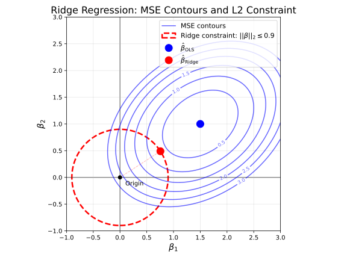
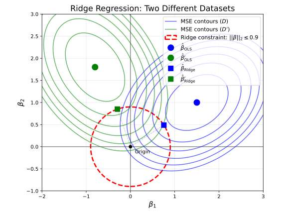
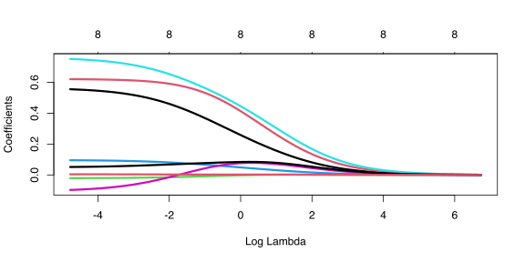
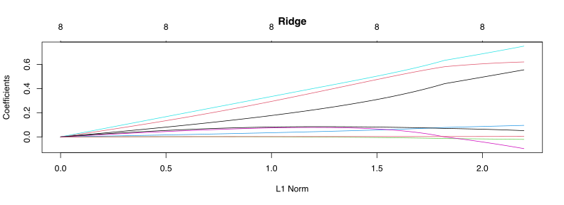

By the end of this lecture, you should be able to:
Implement ridge regression using both constrained and penalized formulations
Derive the closed-form solution for ridge regression
Articulate how the regularization parameter affects bias, variance, and the learned parameters
Overview
In the last lecture, we saw that the risk of a learned model decomposes into three components: bias, variance, and irreducible error.
We also saw that there is often a tradeoff between bias and variance: more flexible models tend to have lower bias but higher variance, while less flexible models tend to have higher bias but lower variance.
Over the next few lectures, we will explore a set of techniques to help us navigate this tradeoff.
We have already seen one such technique: adding (or removing) covariates to our model to reduce bias (or reduce variance).
We will start with ridge regularization, a technique that will help us reduce the variance of our learned models by introducing some bias.
Motivation: Risk Analysis of Ordinary Least Squares
where \(\boldsymbol X \in \mathbb R^{n \times p}\) is the design matrix (with rows \(x_i^\top\)) and \(\boldsymbol Y \in \mathbb R^n\) is the vector of training responses.
Now let’s assume that our data i.i.d. generated according to the linear model \[ Y = X^\top \beta + \epsilon, \qquad \epsilon \sim \mathcal N(0, \sigma^2), \]
for some true parameter vector \(\beta \in \mathbb R^p\).
By this model (and again assuming that our data are i.i.d.), we can write the following model for our training data in matrix form:
\[ \boldsymbol Y = \boldsymbol X \beta + \boldsymbol \epsilon, \qquad \boldsymbol \epsilon \sim \mathcal N(\boldsymbol 0, \sigma^2 I). \]
Let’s now analyze the bias and variance of the OLS estimator \(\hat{\beta}_\mathrm{OLS}\) under this model!
Since we have an unbiased estimator, our average model (\(\mathbb E[\hat f_\mathcal{D}(X) \mid X ]\) from last lecture) will produce the prediction \(X^\top \beta\), so the bias component of the risk will be zero!
CautionCheck Your Assumptions!
We have shown that the bias associated with OLS is zero under the assumption that the linear model is correct.
In practice, it’s very unlikely that the linear model is exactly correct (i.e. the true value of \(Y\) may depend on covariates we don’t have access to, interaction terms, etc.). In that case (i.e. when the linear model is too simple of an approximation for the ground-truth data-generating process), the bias of OLS is non-zero.
(Co-)Variance of OLS
The covariance of this estimator is a little more complicated to derive, but we can use similar techniques to show that:
To understand when the variance of OLS becomes problematic, we can use the singular value decomposition (SVD) of \(\boldsymbol X\).
Recall that any rectangular \(n \times p\) matrix \(\boldsymbol X\) has an SVD \(\boldsymbol X = \boldsymbol U \boldsymbol D \boldsymbol V^\top\)
TipSVD Review
\(\boldsymbol U\) is \(n \times p\) with orthonormal columns: \(\boldsymbol U^\top \boldsymbol U = \boldsymbol I\)
\(\boldsymbol V\) is \(p \times p\) and orthonormal (rows and columns): \(\boldsymbol V^\top \boldsymbol V = \boldsymbol V \boldsymbol V^\top = \boldsymbol I\)
\(\boldsymbol D\) is \(p \times p\), diagonal, and nonnegative (contains the singular values)
Using the SVD, we can rewrite the covariance of OLS as:
This means that \(\text{Cov}(\hat{\beta}_\mathrm{OLS}) = \sigma^2 \boldsymbol V \text{diag}(d_1^{-2}, d_2^{-2}, \ldots, d_p^{-2}) \boldsymbol V^\top\), where \(d_1, d_2, \ldots, d_p\) are the singular values.
Key insight: When \(\boldsymbol X\) has small singular values (i.e., when \(d_j \approx 0\) for some \(j\)), then \(d_j^{-2}\) becomes very large, leading to high variance in \(\hat{\beta}_\mathrm{OLS}\).
This situation arises when \(\boldsymbol X\) is ill-conditioned or nearly rank-deficient, which happens when we have multicollinearity: a linear combination of predictor variables is nearly equal to another predictor variable.
In such cases, \(\hat{\beta}_\mathrm{OLS}\) has large, unstable values with high variance.
Intuition: Fight Variance by “Shrinking” Large Coefficients
Main idea: To combat the high variance problem, we can constrain the values of \(\beta\) to be small.
Constrained Optimization Problem
Instead of solving the unconstrained OLS problem: \[\min_\beta \frac{1}{n}\|\boldsymbol Y - \boldsymbol X\beta\|_2^2\]
We can solve a constrained optimization problem for some \(s > 0\): \[\min_\beta \frac{1}{n}\|\boldsymbol Y - \boldsymbol X\beta\|_2^2 \quad \text{subject to} \quad \|\beta\|_2^2 \leq s\]
Here, \(\|\beta\|_2^2 = \sum_{j=1}^p \beta_j^2\) is the squared \(\ell_2\)-norm of \(\beta\).
This constraint prevents the coefficients from becoming arbitrarily large, which may happen when \(\boldsymbol X\) is ill-conditioned (and thus \(\mathbb E[(\boldsymbol X^\top \boldsymbol X)^{-1}]\) has large entries).

Illustration of constrained vs. unconstrained optimization solutions (\(\hat \beta_\mathrm{OLS}\) vs \(\hat \beta_\mathrm{ridge}\)) on a 2D toy problem. Contours represent level sets of mean squared error (MSE), i.e. \(\frac{1}{N} \Vert \boldsymbol Y - \boldsymbol X \hat \beta \Vert_2^2\), for various values of \(\hat \beta\)
Graphical Perspective
Intuitively, why does this constraint reduce variance?
Recall from the previous lecture that high variance indicates that our learned model is very sensitive to the training data.
The OLS solution \(\hat \beta_\mathrm{OLS}\) depends on the training data \(\mathcal D = \{(x_i, y_i)\}_{i=1}^n\).
If we had a different training set \(\mathcal D'\), we can change the OLS optimization landscape a lot, which can lead to a solution \(\hat \beta_\mathrm{OLS}'\) that is very far away from \(\hat \beta_\mathrm{OLS}\).
If we are instead constrained to have our solution inside the ball of radius \(\sqrt{s}\), then the optimal solutions for \(\mathcal D\) and \(\mathcal D'\) (\(\hat \beta_s\) and \(\hat \beta'_s\)) will be less far apart!

Illustration of why ridge reduces variance. Two different training samples (\(\mathcal D\) and \(\mathcal D'\)) yield different mean squared error (MSE) optimization problems with different solutions that may be far apart. If we instead constrain the MSE to live inside a ball, the resulting solutions will be less far apart.
WarningThe Trade-off
By constraining the coefficients, we can gain a significant reduction in variance, though we will introduce some bias (as we will soon see).
Ridge Regression
Regularization
An equivalent way to write the constrained optimization problem \[\hat{\beta}_s = \mathrm{argmin}_{\beta} \frac{1}{n}\|\boldsymbol Y - \boldsymbol X\beta\|_2^2 \quad \text{subject to} \quad \|\beta\|_2^2 \leq s\] is as a regularized (or penalized) optimization with regularization weight \(\lambda\): \[\hat{\beta}_\lambda = \mathrm{argmin}_{\beta} \frac{1}{n}\|\boldsymbol Y - \boldsymbol X\beta\|_2^2 + \lambda \|\beta\|_2^2\]
For every \(\lambda\) there is a unique \(s\) (and vice versa) that makes \(\hat{\beta}_s = \hat{\beta}_\lambda\). We will work with the \(\lambda\) formulation.
Closed Form
Ridge regression has a closed-form solution (set the derivative with respect to \(\beta\) to zero): \[\hat{\beta}_\lambda = (\boldsymbol X^\top \boldsymbol X + \lambda \boldsymbol I)^{-1} \boldsymbol X^\top \boldsymbol Y\]
The \(+ \lambda \boldsymbol I\) term stabilizes the inversion when \(\boldsymbol X^\top \boldsymbol X\) is ill-conditioned, preventing division by near-zero singular values.
Shrinkage
Using the SVD \(\boldsymbol X = \boldsymbol U \boldsymbol D \boldsymbol V^\top\), we can show that: \[\hat{\beta}_\lambda = \boldsymbol V (\boldsymbol D^2 + \lambda \boldsymbol I)^{-1} \boldsymbol D \boldsymbol U^\top \boldsymbol Y\]
Notice that OLS depends on \(d_j/d_j^2 = 1/d_j\) while ridge depends on \(d_j/(d_j^2 + \lambda)\).
Shrinkage effect: Ridge regression makes the coefficients smaller relative to OLS, but when \(\boldsymbol X\) has small singular values, ridge compensates with \(\lambda\) in the denominator.
NoteKey Observations
\(\lambda = 0\) makes \(\hat{\beta}_\lambda = \hat{\beta}_\mathrm{OLS}\)
Why?
When \(\lambda = 0\), \((\boldsymbol X^\top \boldsymbol X + \lambda \boldsymbol I)^{-1} \boldsymbol X^\top \boldsymbol y = (\boldsymbol X^\top \boldsymbol X)^{-1} \boldsymbol X^\top \boldsymbol y = \hat \beta_\mathrm{OLS}\).
\(\lambda \to \infty\) makes \(\hat{\beta}_\lambda \to \boldsymbol{0}\)
Why?
We can write \((\boldsymbol X^\top \boldsymbol X + \lambda \boldsymbol I)^{-1} = \frac{1}{\lambda} (\frac{1}{\lambda} \boldsymbol X^\top \boldsymbol X + \boldsymbol I)^{-1}\).
As \(\lambda \to \infty\), \(\frac{1}{\lambda} \to 0\), so \(\frac{1}{\lambda} (\frac{1}{\lambda} \boldsymbol X^\top \boldsymbol X + \boldsymbol I)^{-1} \to \frac{1}{\lambda} \boldsymbol I^{-1} = \boldsymbol 0\).
Any \(0 < \lambda < \infty\) penalizes larger values of \(\beta\), effectively shrinking them
Effect on Bias/Variance
Effect on Bias: Ridge regression introduces some bias because it shrinks the unbiased OLS coefficients towards zero.
So \(\hat{\beta}_\lambda\) is a transformed version of \(\hat \beta_\mathrm{OLS}\). Since \(\hat \beta_\mathrm{OLS}\) is unbiased, and \((\boldsymbol X^\top \boldsymbol X + \lambda \boldsymbol I)^{-1} \boldsymbol X^\top \boldsymbol X\) is not the identity, \(\hat{\beta}_\lambda\) must be biased!
Effect on Variance: As we’ve discussed, ridge regression reduces variance by preventing coefficients from becoming too large.
Picking the Regularization Parameter
With ridge regression, we’re accepting a slight increase in bias with the hope that we’ll get a large decrease in variance.
As \(\lambda\) increases, bias increases and variance decreases.
We want to choose the best value of \(\lambda\) that hits the sweet spot in the bias-variance tradeoff.
We can use cross-validation to select the value of \(\lambda\) that minimizes risk.
Example
Let’s see ridge regression in action on the prostate cancer dataset from Lab 1:
data(prostate, package ="ElemStatLearn")Y <- prostate$lpsaX <-model.matrix(~ ., data = prostate |> dplyr::select(-train, -lpsa))library(glmnet)ridge <-glmnet(x = X, y = Y, alpha =0, lambda.min.ratio = .00001)plot(ridge, xvar ="lambda", lwd =3)

This first plot shows the values of the \(\hat \beta_\mathrm{OLS}\) coefficients as a function of \(\log(\lambda)\).
When \(\log(\lambda)\) is very negative (i.e., \(\lambda\) is close to zero), the coefficients are at their largest values.
As \(\log(\lambda)\) increases, the coefficients shrink towards zero.
plot(ridge, main ="Ridge")

This second plot shows the cross-validation estimation of risk as a function of \(\log(\lambda)\).
We can see that the risk is minimized at some intermediate value of \(\lambda\), indicating that it is worthwhile introducing some bias to reduce variance!
However, the risk with \(\lambda = 0\) (i.e., OLS) is not much worse than the optimal risk, indicating that we may not have been in the high-variance regime with our OLS estimator.
(Maybe we’re actually in the high bias regime? We’ll learn some techniques to address that soon!)
Summary
We have now introduced our first method to help us navigate the bias-variance tradeoff: ridge regression, which introduces bias to reduce variance.
The Problem: OLS has high variance when \(\boldsymbol X\) is ill-conditioned (multicollinearity), which occurs when some singular values are near zero, making \((\boldsymbol X^\top \boldsymbol X)^{-1}\) unstable.
The Solution: Ridge regression constrains coefficients via \(\|\beta\|_2^2 \leq s\) (or equivalently adds penalty \(\lambda \|\beta\|_2^2\)), which shrinks coefficients toward zero and stabilizes the solution with closed form \(\hat{\beta}_\lambda = (\boldsymbol X^\top \boldsymbol X + \lambda \boldsymbol I)^{-1} \boldsymbol X^\top \boldsymbol Y\).
The Tradeoff: Ridge introduces bias but significantly reduces variance, and we can use cross-validation to find the optimal \(\lambda\) that minimizes prediction risk in the bias-variance tradeoff.